Last updated: 2021-01-06
Checks: 7 0
Knit directory: emlr_mod_v_XXX/
This reproducible R Markdown analysis was created with workflowr (version 1.6.2). The Checks tab describes the reproducibility checks that were applied when the results were created. The Past versions tab lists the development history.
Great! Since the R Markdown file has been committed to the Git repository, you know the exact version of the code that produced these results.
Great job! The global environment was empty. Objects defined in the global environment can affect the analysis in your R Markdown file in unknown ways. For reproduciblity it’s best to always run the code in an empty environment.
The command set.seed(20200707) was run prior to running the code in the R Markdown file. Setting a seed ensures that any results that rely on randomness, e.g. subsampling or permutations, are reproducible.
Great job! Recording the operating system, R version, and package versions is critical for reproducibility.
Nice! There were no cached chunks for this analysis, so you can be confident that you successfully produced the results during this run.
Great job! Using relative paths to the files within your workflowr project makes it easier to run your code on other machines.
Great! You are using Git for version control. Tracking code development and connecting the code version to the results is critical for reproducibility.
The results in this page were generated with repository version 1d55c11. See the Past versions tab to see a history of the changes made to the R Markdown and HTML files.
Note that you need to be careful to ensure that all relevant files for the analysis have been committed to Git prior to generating the results (you can use wflow_publish or wflow_git_commit). workflowr only checks the R Markdown file, but you know if there are other scripts or data files that it depends on. Below is the status of the Git repository when the results were generated:
Ignored files:
Ignored: .Rhistory
Ignored: .Rproj.user/
Unstaged changes:
Modified: code/Workflowr_project_managment.R
Note that any generated files, e.g. HTML, png, CSS, etc., are not included in this status report because it is ok for generated content to have uncommitted changes.
These are the previous versions of the repository in which changes were made to the R Markdown (analysis/eMLR_data_preparation.Rmd) and HTML (docs/eMLR_data_preparation.html) files. If you’ve configured a remote Git repository (see ?wflow_git_remote), click on the hyperlinks in the table below to view the files as they were in that past version.
| File | Version | Author | Date | Message |
|---|---|---|---|---|
| Rmd | 1d55c11 | jens-daniel-mueller | 2021-01-06 | local rebuild after pulling |
| html | e5cb81a | Donghe-Zhu | 2021-01-05 | Build site. |
| Rmd | 608cc45 | Donghe-Zhu | 2021-01-05 | modification of analysis |
| html | a499f10 | Donghe-Zhu | 2021-01-05 | Build site. |
| Rmd | 5855606 | Donghe-Zhu | 2021-01-05 | first model-based run |
| Rmd | 715bdb4 | Donghe-Zhu | 2021-01-02 | model modification |
| html | fb8a752 | Donghe-Zhu | 2020-12-23 | Build site. |
| Rmd | 82e3c9c | Donghe-Zhu | 2020-12-23 | first build after creating model template |
| html | 8fae0b2 | Donghe-Zhu | 2020-12-21 | Build site. |
| Rmd | d73ae35 | Donghe-Zhu | 2020-12-21 | first version with lm error |
| html | c8b76b3 | jens-daniel-mueller | 2020-12-19 | Build site. |
| Rmd | b5fedce | jens-daniel-mueller | 2020-12-19 | first build after creating model template |
| Rmd | 8e8abf5 | Jens Müller | 2020-12-18 | Initial commit |
Required are:
tref <-
read_csv(paste(path_version_data,
"tref.csv",
sep = ""))
GLODAP <-
read_csv(paste(
path_version_data,
"GLODAPv2.2020_clean_model_runA.csv",
sep = ""
))
cant_tref_1 <-
read_csv(paste(
path_preprocessing,
"cant_annual_field_AD/cant_",
unique(tref$year[1]),
".csv",
sep = ""
))
cant_tref_2 <-
read_csv(paste(
path_preprocessing,
"cant_annual_field_AD/cant_",
unique(tref$year[2]),
".csv",
sep = ""
))
cant_tref_3 <-
read_csv(paste(
path_preprocessing,
"cant_annual_field_AD/cant_",
unique(tref$year[3]),
".csv",
sep = ""
))
co2_atm <-
read_csv(paste(path_preprocessing,
"co2_atm.csv",
sep = ""))The predictor PO4* was be calculated according to Clement and Gruber (2018), ie based on oxygen. Please note that an erroneous equations for PO4* calculation is given in the supplement of Gruber et al (2019), based on nitrate.
Here we use following equation:
print(b_phosphate_star)function (phosphate, oxygen)
{
phosphate_star = phosphate + (oxygen/params_local$rPO) -
params_local$rPO_offset
return(phosphate_star)
}if ("phosphate_star" %in% params_local$MLR_predictors) {
GLODAP <- GLODAP %>%
mutate(phosphate_star = b_phosphate_star(phosphate, oxygen))
}C* serves as a conservative tracer of anthropogenic CO2 uptake. It is derived from synthetic subsetted DIC by removing the impact of
Contributions of those processes are estimated from phosphate and alkalinity concentrations.
The stoichiometric nutrient ratios for the production and mineralization of organic matter were set to:
C* was calculated as:
print(b_cstar)function (tco2, phosphate, talk)
{
cstar = tco2 - (params_local$rCP * phosphate) - 0.5 * (talk -
(params_local$rNP * phosphate))
return(cstar)
}GLODAP <- GLODAP %>%
mutate(rCP_phosphate = -params_local$rCP * phosphate,
talk_05 = -0.5 * talk,
rNP_phosphate_05 = -0.5 * params_local$rNP * phosphate,
cstar = b_cstar(tco2, phosphate, talk))To adjust C* values to the reference year of each observation period, we assume a transient steady state change of cant between the time of model subsetting and the reference year. The adjustment requires an approximation of the cant concentration at the reference year. We here use the model-estimated annual cant field for each reference year.
Read in Cant field for each reference year.
# print reference year table
kable(tref) %>%
add_header_above() %>%
kable_styling()| era | year |
|---|---|
| 1982-1999 | 1995 |
| 2000-2012 | 2007 |
| 2013-2019 | 2015 |
# join cant with tref
cant_3d <- bind_rows(cant_tref_1, cant_tref_2, cant_tref_3)
cant_3d <- left_join(cant_3d, tref) %>%
arrange(lon, lat, depth) %>%
select(lon, lat, depth, era, cant_total)
rm(cant_tref_1, cant_tref_2, cant_tref_3)map +
geom_raster(data = cant_3d %>% filter(depth == 5),
aes(lon, lat, fill = cant_total)) +
facet_wrap(~ era, ncol = 1) +
scale_fill_viridis_c() +
labs(title = "Surface total Cant concentration")# observations grid per era
GLODAP_obs_grid_era <- GLODAP %>%
distinct(lat, lon, era)
# cant data at observations grid
cant_3d_obs <- left_join(
GLODAP_obs_grid_era,
cant_3d)
# calculate number of cant data points per grid cell
cant_3d_obs <- cant_3d_obs %>%
group_by(lon, lat, era) %>%
mutate(n = n()) %>%
ungroup()
# GLODAP-based model subset with only one Cant value
map +
geom_bin2d(data = cant_3d_obs,
aes(lon, lat),
binwidth = 1) +
scale_fill_viridis_c() +
facet_wrap(~ era, ncol = 1) +
labs(title = "Number of Cant depth levels",
subtitle = "available per latxlon grid cell")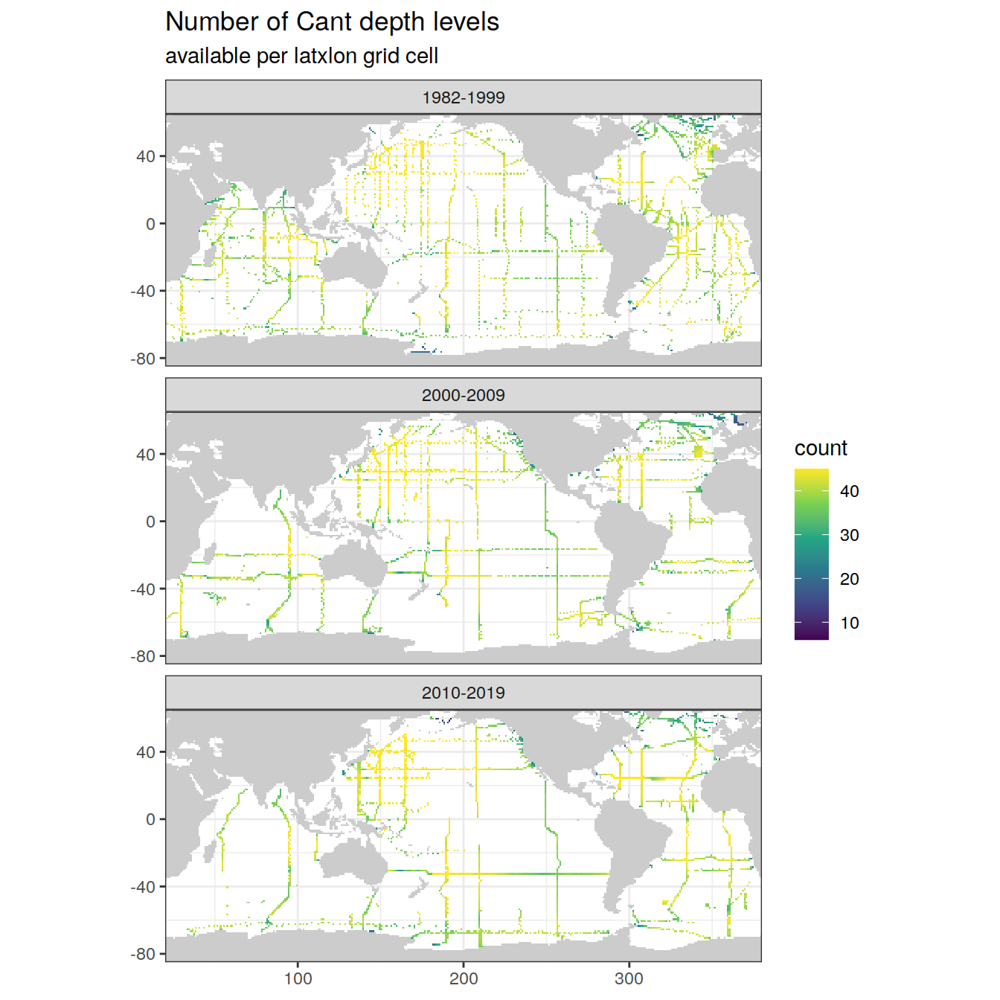
rm(cant_3d, GLODAP_obs_grid_era)
GLODAP_cant_obs <- full_join(GLODAP, cant_3d_obs)
rm(GLODAP, cant_3d_obs)
# fill number of cant data points per grid cell to all model subsetting
GLODAP_cant_obs <- GLODAP_cant_obs %>%
group_by(lon, lat, era) %>%
fill(n, .direction = "updown") %>%
ungroup()The model-estimated annual cant fields were merged with GLODAP-based synthetic cmorized model subsetting by:
# define positive cant values
GLODAP_cant_obs <- GLODAP_cant_obs %>%
mutate(cant_total_pos = if_else(cant_total < 0, 0, cant_total))
# interpolate cant to subsetting depth
GLODAP_cant_obs_int <- GLODAP_cant_obs %>%
filter(n > 1) %>%
group_by(lat, lon, era) %>%
arrange(depth) %>%
mutate(cant_int = approxfun(depth, cant_total_pos, rule = 2)(depth)) %>%
ungroup()
# set cant for subsetting depth if only one cant available
#GLODAP_cant_obs_set <- GLODAP_cant_obs %>%
# filter(n == 1) %>%
# group_by(lat, lon, era) %>%
# mutate(cant_int = mean(cant_total, na.rm = TRUE)) %>%
# ungroup()
### bin data sets with interpolated and set cant
GLODAP_cant_obs <- GLODAP_cant_obs_int
rm(GLODAP_cant_obs_int)
ggplot() +
geom_path(
data = GLODAP_cant_obs %>%
filter(lat == 48.5, lon == 165.5,!is.na(cant_total)) %>%
arrange(depth),
aes(cant_total, depth, col = "mapped")
) +
geom_point(
data = GLODAP_cant_obs %>%
filter(lat == 48.5, lon == 165.5,!is.na(cant_total)) %>%
arrange(depth),
aes(cant_total, depth, col = "mapped")
) +
geom_point(
data = GLODAP_cant_obs %>%
filter(lat == 48.5, lon == 165.5, date == ymd("2018-06-27")),
aes(cant_int, depth, col = "interpolated")
) +
scale_y_reverse() +
facet_wrap(~era) +
scale_color_brewer(palette = "Dark2", name = "") +
labs(title = "Cant interpolation to subsetting depth - example profile")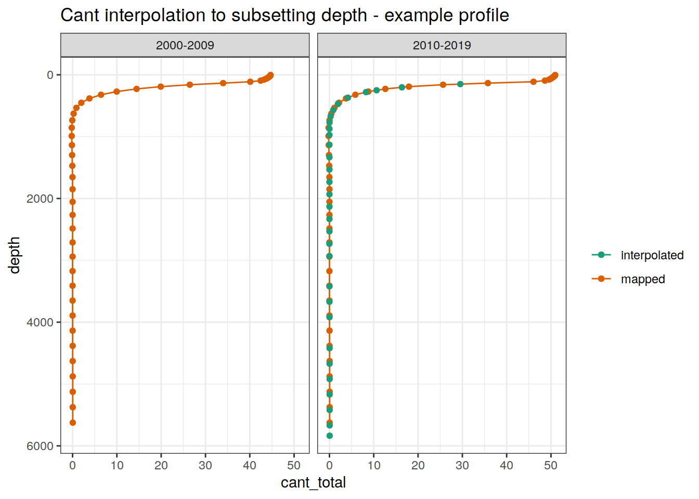
# remove cant data at grid cells without observations
GLODAP <- GLODAP_cant_obs %>%
filter(!is.na(cstar)) %>%
mutate(cant_total_pos = cant_int) %>%
select(-c(cant_int, cant_total, n))
rm(GLODAP_cant_obs)GLODAP-based subsetting were merged with mean annual atmospheric pCO2 levels by year.
GLODAP <- left_join(GLODAP, co2_atm)# assign reference year
GLODAP <- GLODAP %>%
group_by(era) %>%
mutate(tref = median(year)) %>%
ungroup()
# extract atm pCO2 at reference year
co2_atm_tref <- right_join(co2_atm, tref) %>%
select(-year) %>%
rename(pCO2_tref = pCO2)
# merge atm pCO2 at tref with GLODAP
GLODAP <- full_join(GLODAP, co2_atm_tref)
rm(co2_atm, tref)
# calculate cstar for reference year
GLODAP <- GLODAP %>%
mutate(
cstar_tref_delta =
((pCO2 - pCO2_tref) / (pCO2_tref - params_local$preind_atm_pCO2)) * cant_total_pos,
cstar_tref = cstar - cstar_tref_delta)GLODAP %>%
ggplot(aes(cstar_tref_delta)) +
geom_histogram(binwidth = 1) +
labs(title = "Histogramm with binwidth = 1")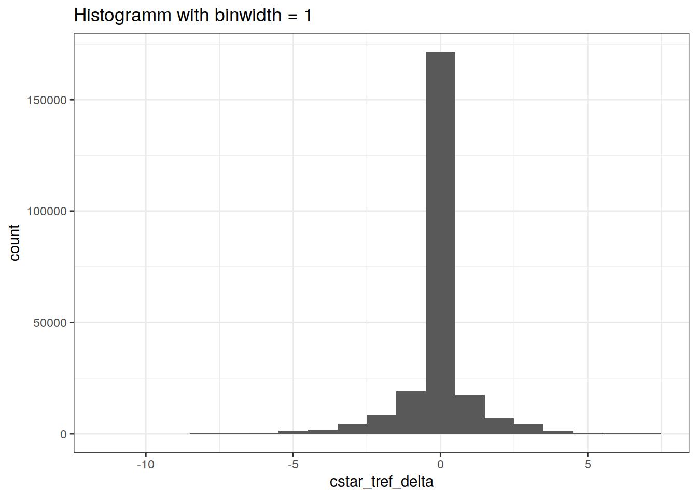
GLODAP %>%
sample_n(1e4) %>%
ggplot(aes(year, cstar_tref_delta, col = cant_total_pos)) +
geom_point() +
scale_color_viridis_c() +
labs(title = "Time series of random subsample 1e4")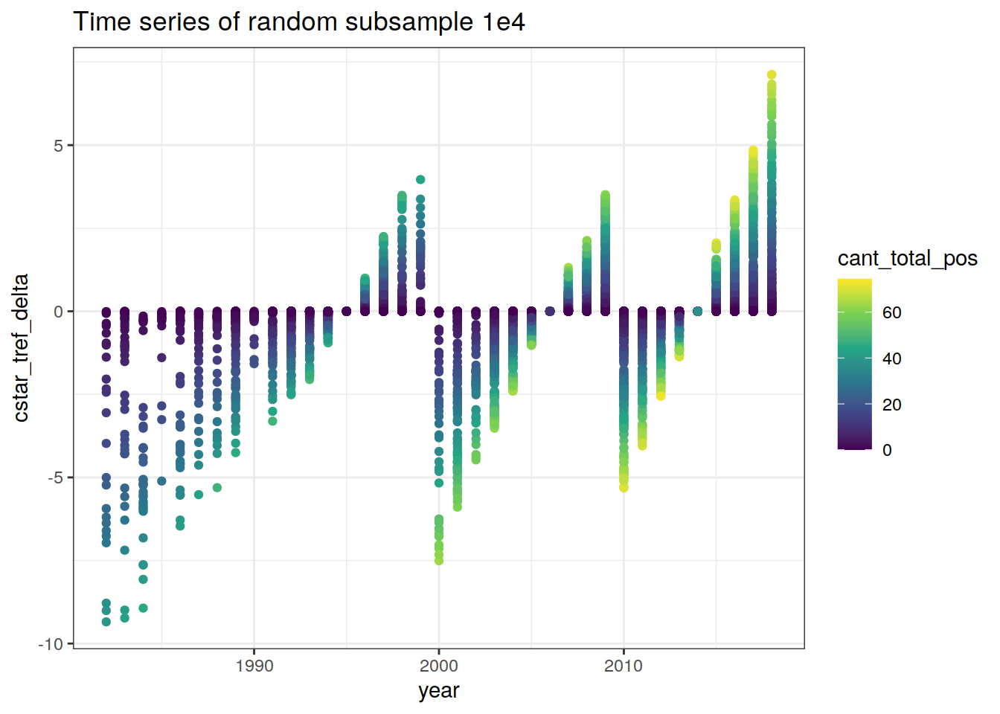
GLODAP %>%
ggplot(aes(year, cstar_tref_delta)) +
geom_bin2d(binwidth = 1) +
scale_fill_viridis_c(trans = "log10") +
labs(title = "Heatmap with binwidth = 1")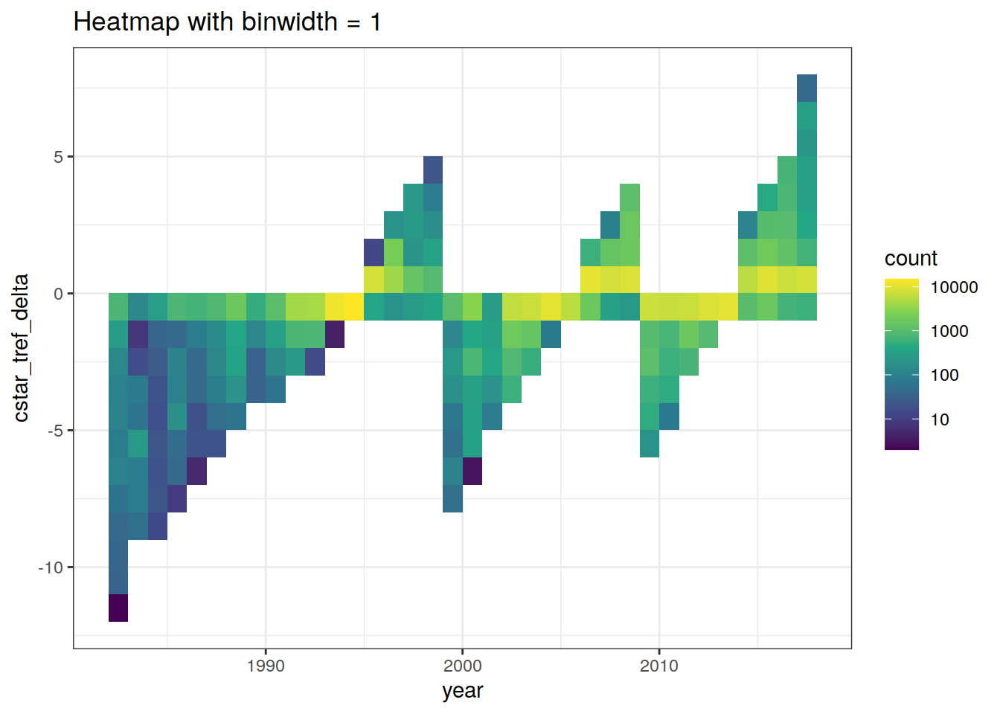
A selected section is plotted to demonstrate the magnitude of various parameters and corrections relevant to C*.
GLODAP_cruise <- GLODAP %>%
filter(cruise %in% params_global$cruises_meridional)map +
geom_path(data = GLODAP_cruise %>%
arrange(date),
aes(lon, lat)) +
geom_point(data = GLODAP_cruise %>%
arrange(date),
aes(lon, lat, col = date)) +
scale_color_viridis_c(trans = "date") +
labs(title = paste("Cruise year:", mean(GLODAP_cruise$year)))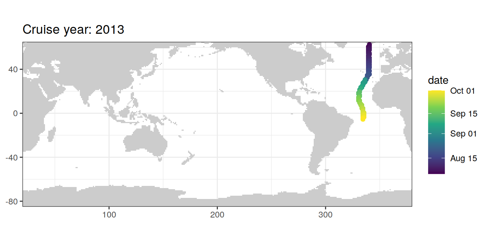
lat_section <-
GLODAP_cruise %>%
ggplot(aes(lat, depth)) +
scale_y_reverse() +
scale_fill_viridis_c() +
theme(axis.title.x = element_blank())
for (i_var in c("tco2",
"rCP_phosphate",
"talk_05",
"rNP_phosphate_05",
"cstar",
"cstar_tref")) {
print(lat_section +
stat_summary_2d(aes(z = !!sym(i_var))) +
scale_fill_viridis_c(name = i_var)
)
}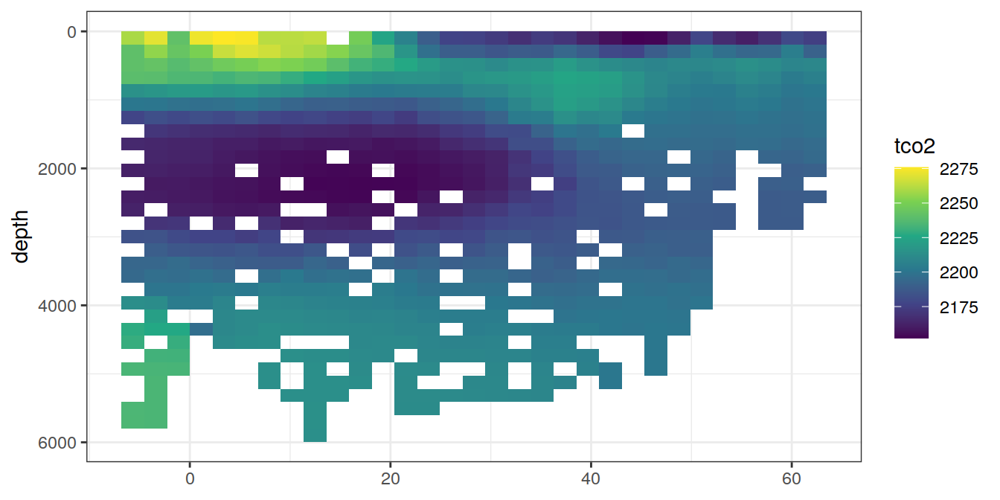
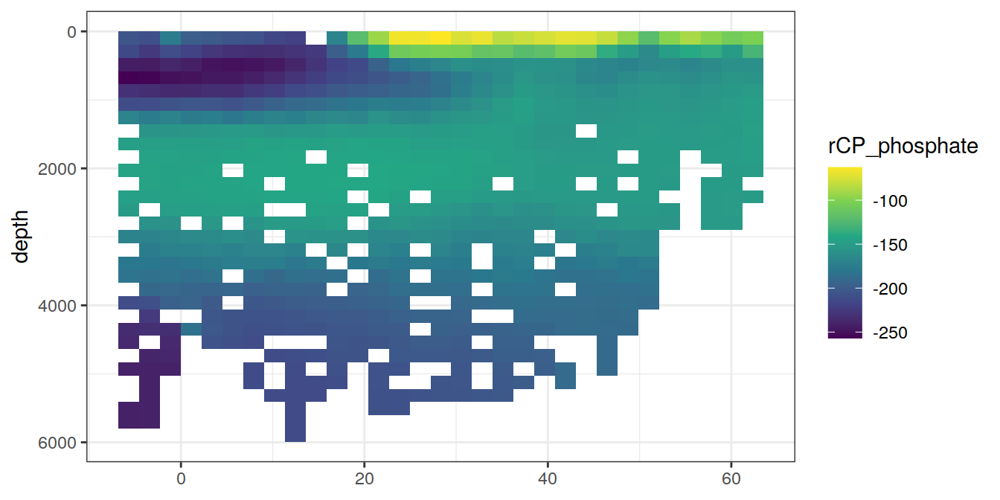
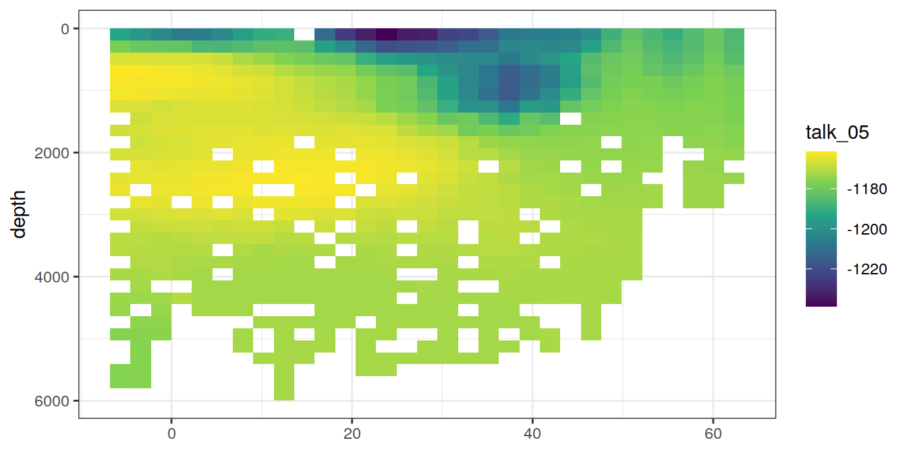
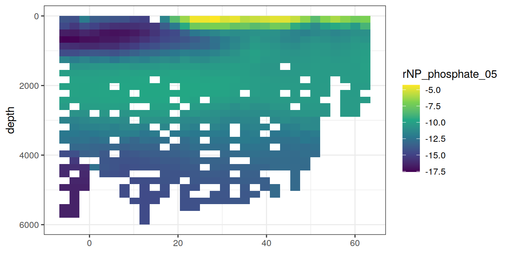
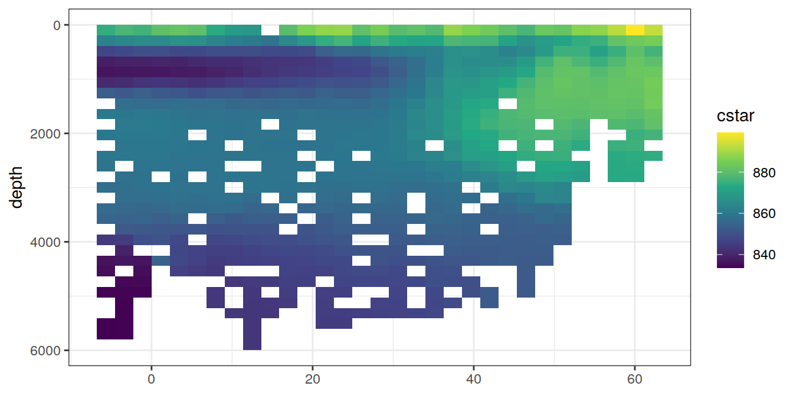
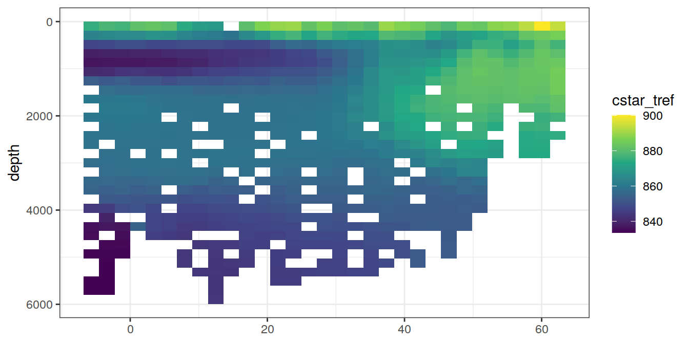
rm(lat_section, GLODAP_cruise)The following boundaries for isoneutral slabs were defined:
Continuous neutral densities (gamma) values from model subsetting are grouped into isoneutral slabs.
GLODAP <- m_cut_gamma(GLODAP, "gamma")GLODAP_cruise <- GLODAP %>%
filter(cruise %in% params_global$cruises_meridional)
lat_section <-
GLODAP_cruise %>%
ggplot(aes(lat, depth)) +
scale_y_reverse() +
theme(legend.position = "bottom")
lat_section +
geom_point(aes(col = gamma_slab)) +
scale_color_viridis_d()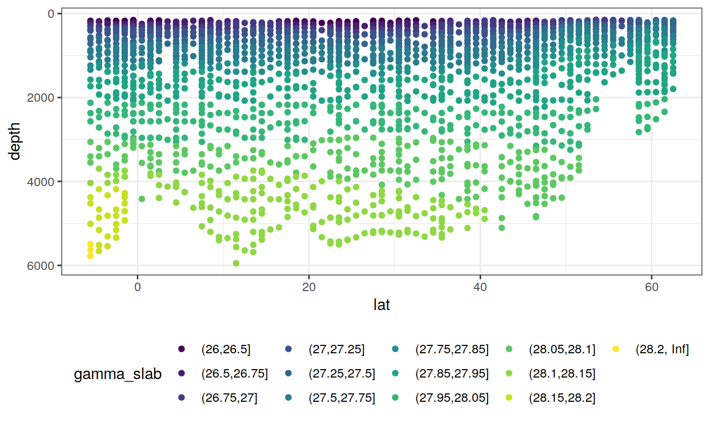
rm(lat_section, GLODAP_cruise)# this section was only used to calculate gamma locally, and compare it to the value provided in GLODAP data set
GLODAP_cruise <- GLODAP %>%
filter(cruise %in% params_global$cruises_meridional)
library(oce)
library(gsw)
# calculate pressure from depth
GLODAP_cruise <- GLODAP_cruise %>%
mutate(CTDPRS = gsw_p_from_z(-depth,
lat))
GLODAP_cruise <- GLODAP_cruise %>%
mutate(THETA = swTheta(salinity = sal,
temperature = temp,
pressure = CTDPRS,
referencePressure = 0,
longitude = lon-180,
latitude = lat))
GLODAP_cruise <- GLODAP_cruise %>%
rename(LATITUDE = lat,
LONGITUDE = lon,
SALNTY = sal,
gamma_provided = gamma)
library(reticulate)
source_python(
paste(
path_root,
"/utilities/functions/python_scripts/",
"Gamma_GLODAP_python.py",
sep = ""
)
)
GLODAP_cruise <- calculate_gamma(GLODAP_cruise)
GLODAP_cruise <- GLODAP_cruise %>%
mutate(gamma_delta = gamma_provided - GAMMA)
lat_section <-
GLODAP_cruise %>%
ggplot(aes(LATITUDE, CTDPRS)) +
scale_y_reverse() +
theme(legend.position = "bottom")
lat_section +
stat_summary_2d(aes(z = gamma_delta)) +
scale_color_viridis_c()
GLODAP_cruise %>%
ggplot(aes(gamma_delta))+
geom_histogram()
rm(lat_section, GLODAP_cruise, cruises_meridional)GLODAP <- GLODAP %>%
mutate(gamma_slab = factor(gamma_slab),
gamma_slab = factor(gamma_slab, levels = rev(levels(gamma_slab))))
for (i_basin in unique(GLODAP$basin)) {
# i_basin <- unique(GLODAP$basin)[3]
print(
GLODAP %>%
filter(basin == i_basin) %>%
ggplot(aes(lat, gamma_slab)) +
geom_bin2d(binwidth = 5) +
scale_fill_viridis_c(
option = "magma",
direction = -1,
trans = "log10"
) +
scale_x_continuous(breaks = seq(-100, 100, 20),
limits = c(params_global$lat_min,
params_global$lat_max)) +
facet_grid(era ~ .) +
labs(title = paste("MLR region: ", i_basin))
)
}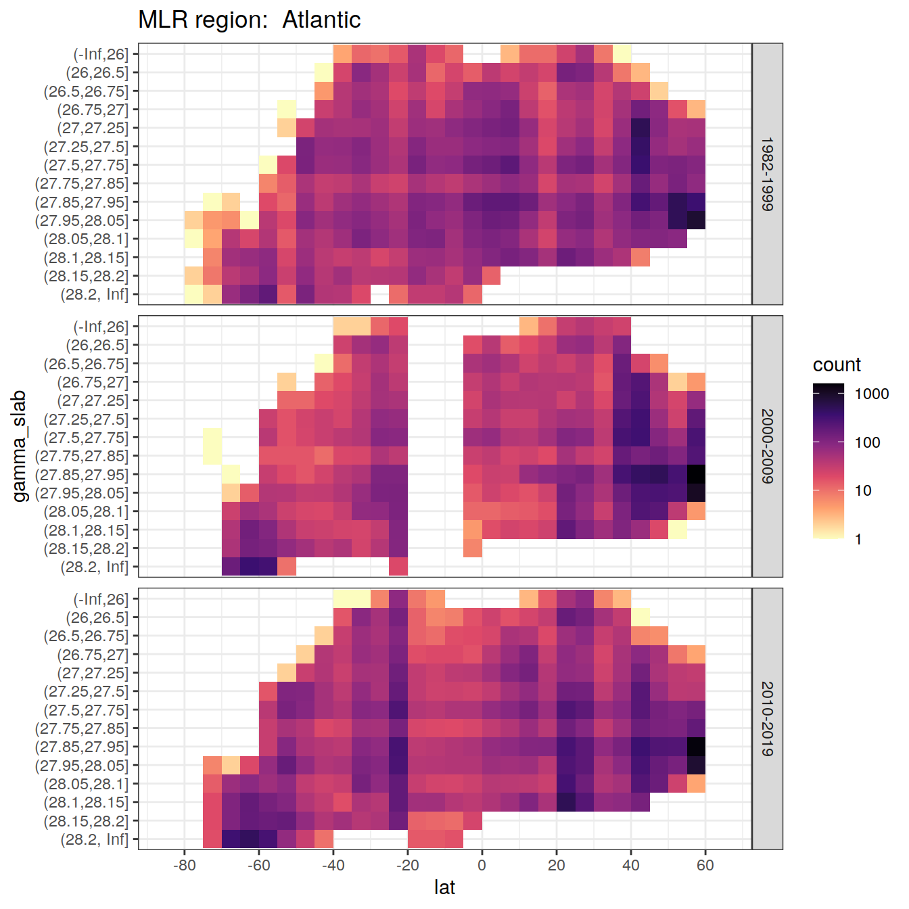
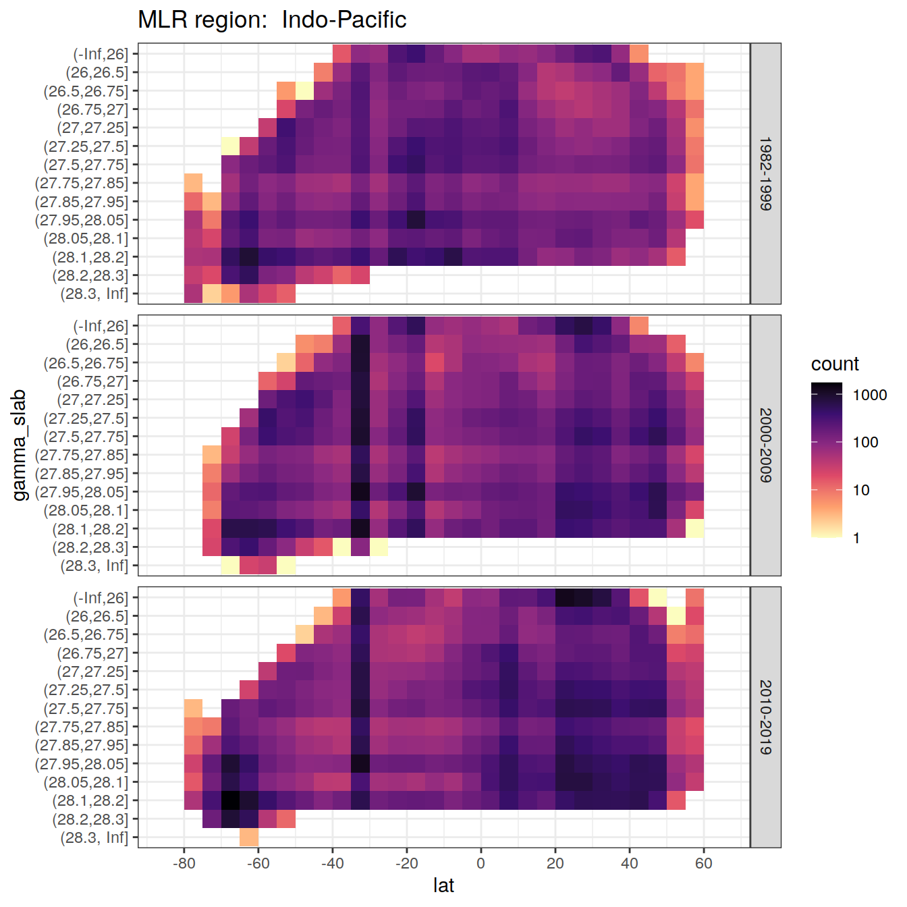
GLODAP_vars <- GLODAP %>%
select(params_local$MLR_target,
params_local$MLR_predictors)
GLODAP_vars_long <- GLODAP_vars %>%
pivot_longer(
cols = c(params_local$MLR_target,
params_local$MLR_predictors),
names_to = "variable",
values_to = "value"
)
GLODAP_vars_long %>%
ggplot(aes(value)) +
geom_histogram() +
facet_wrap(~ variable,
ncol = 2,
scales = "free")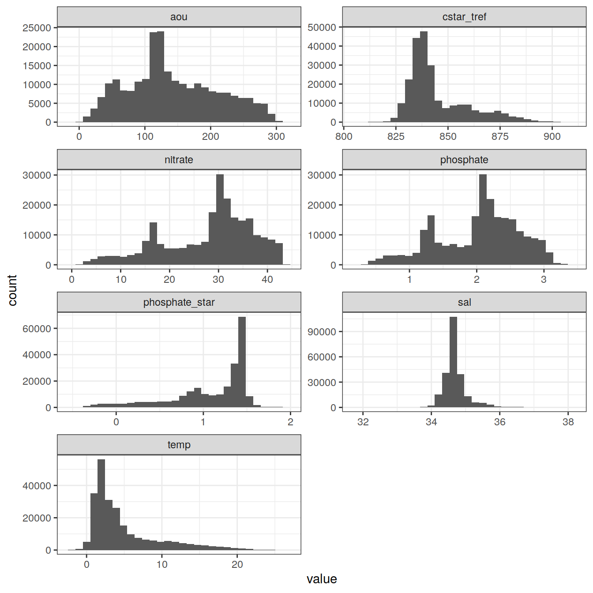
rm(GLODAP_vars, GLODAP_vars_long)Zonal and meridional section plots are produce for each cruise individually and are available under:
/nfs/kryo/work/jenmueller/emlr_cant/model/v_XXX/figures/Cruise_sections_histograms/
if (params_local$plot_all_figures == "y") {
cruises <- GLODAP %>%
group_by(cruise) %>%
summarise(date_mean = mean(date, na.rm = TRUE),
n = n()) %>%
ungroup() %>%
arrange(date_mean)
GLODAP <- full_join(GLODAP, cruises)
n <- 0
for (i_cruise in unique(cruises$cruise)) {
# i_cruise <- unique(cruises$cruise)[1]
# n <- n + 1
# print(n)
GLODAP_cruise <- GLODAP %>%
filter(cruise == i_cruise) %>%
arrange(date)
cruises_cruise <- cruises %>%
filter(cruise == i_cruise)
map_plot <-
map +
geom_point(data = GLODAP_cruise,
aes(lon, lat, col = date)) +
scale_color_viridis_c(trans = "date") +
labs(title = paste("Mean date:", cruises_cruise$date_mean,
"| cruise:", cruises_cruise$cruise,
"| n(samples):", cruises_cruise$n))
lon_section <- GLODAP_cruise %>%
ggplot(aes(lon, depth)) +
scale_y_reverse() +
scale_fill_viridis_c()
lon_tco2 <- lon_section+
stat_summary_2d(aes(z=tco2))
lon_talk <- lon_section+
stat_summary_2d(aes(z=talk))
lon_phosphate <- lon_section+
stat_summary_2d(aes(z=phosphate))
lon_oxygen <- lon_section+
stat_summary_2d(aes(z=oxygen))
lon_aou <- lon_section+
stat_summary_2d(aes(z=aou))
lon_phosphate_star <- lon_section+
stat_summary_2d(aes(z=phosphate_star))
lon_nitrate <- lon_section+
stat_summary_2d(aes(z=nitrate))
lon_cstar <- lon_section+
stat_summary_2d(aes(z=cstar_tref))
lat_section <- GLODAP_cruise %>%
ggplot(aes(lat, depth)) +
scale_y_reverse() +
scale_fill_viridis_c()
lat_tco2 <- lat_section+
stat_summary_2d(aes(z=tco2))
lat_talk <- lat_section+
stat_summary_2d(aes(z=talk))
lat_phosphate <- lat_section+
stat_summary_2d(aes(z=phosphate))
lat_oxygen <- lat_section+
stat_summary_2d(aes(z=oxygen))
lat_aou <- lat_section+
stat_summary_2d(aes(z=aou))
lat_phosphate_star <- lat_section+
stat_summary_2d(aes(z=phosphate_star))
lat_nitrate <- lat_section+
stat_summary_2d(aes(z=nitrate))
lat_cstar <- lat_section+
stat_summary_2d(aes(z=cstar_tref))
hist_tco2 <- GLODAP_cruise %>%
ggplot(aes(tco2)) +
geom_histogram()
hist_talk <- GLODAP_cruise %>%
ggplot(aes(talk)) +
geom_histogram()
hist_phosphate <- GLODAP_cruise %>%
ggplot(aes(phosphate)) +
geom_histogram()
hist_oxygen <- GLODAP_cruise %>%
ggplot(aes(oxygen)) +
geom_histogram()
hist_aou <- GLODAP_cruise %>%
ggplot(aes(aou)) +
geom_histogram()
hist_phosphate_star <- GLODAP_cruise %>%
ggplot(aes(phosphate_star)) +
geom_histogram()
hist_nitrate <- GLODAP_cruise %>%
ggplot(aes(nitrate)) +
geom_histogram()
hist_cstar <- GLODAP_cruise %>%
ggplot(aes(cstar_tref)) +
geom_histogram()
(map_plot /
((hist_tco2 / hist_talk / hist_phosphate / hist_cstar) |
(hist_oxygen / hist_phosphate_star / hist_nitrate / hist_aou)
)) |
((lat_tco2 / lat_talk / lat_phosphate / lat_oxygen / lat_aou / lat_phosphate_star / lat_nitrate / lat_cstar) |
(lon_tco2 / lon_talk / lon_phosphate / lon_oxygen / lon_aou /lon_phosphate_star / lon_nitrate / lon_cstar))
ggsave(
path = paste(path_version_figures, "Cruise_sections_histograms/", sep = ""),
filename = paste(
"Cruise_date",
cruises_cruise$date_mean,
"count",
cruises_cruise$n,
"cruiseID",
cruises_cruise$cruise,
".png",
sep = "_"
),
width = 20, height = 12)
rm(map_plot,
lon_section, lat_section,
lat_tco2, lat_talk, lat_phosphate, lon_tco2, lon_talk, lon_phosphate,
GLODAP_cruise, cruises_cruise)
}
}# select relevant columns
GLODAP <- GLODAP %>%
select(
year,
date,
era,
basin,
basin_AIP,
lat,
lon,
depth,
gamma,
gamma_slab,
params_local$MLR_predictors,
params_local$MLR_target
)
GLODAP %>% write_csv(paste(
path_version_data,
"GLODAPv2.2020_MLR_fitting_ready_model_runA.csv",
sep = ""
))
co2_atm_tref %>% write_csv(paste(path_version_data,
"co2_atm_tref.csv",
sep = ""))
sessionInfo()R version 4.0.3 (2020-10-10)
Platform: x86_64-pc-linux-gnu (64-bit)
Running under: openSUSE Leap 15.2
Matrix products: default
BLAS: /usr/local/R-4.0.3/lib64/R/lib/libRblas.so
LAPACK: /usr/local/R-4.0.3/lib64/R/lib/libRlapack.so
locale:
[1] LC_CTYPE=en_US.UTF-8 LC_NUMERIC=C
[3] LC_TIME=en_US.UTF-8 LC_COLLATE=en_US.UTF-8
[5] LC_MONETARY=en_US.UTF-8 LC_MESSAGES=en_US.UTF-8
[7] LC_PAPER=en_US.UTF-8 LC_NAME=C
[9] LC_ADDRESS=C LC_TELEPHONE=C
[11] LC_MEASUREMENT=en_US.UTF-8 LC_IDENTIFICATION=C
attached base packages:
[1] stats graphics grDevices utils datasets methods base
other attached packages:
[1] kableExtra_1.3.1 knitr_1.30 lubridate_1.7.9 marelac_2.1.10
[5] shape_1.4.5 metR_0.9.0 scico_1.2.0 patchwork_1.1.1
[9] collapse_1.5.0 forcats_0.5.0 stringr_1.4.0 dplyr_1.0.2
[13] purrr_0.3.4 readr_1.4.0 tidyr_1.1.2 tibble_3.0.4
[17] ggplot2_3.3.2 tidyverse_1.3.0 workflowr_1.6.2
loaded via a namespace (and not attached):
[1] fs_1.5.0 gsw_1.0-5 webshot_0.5.2
[4] RColorBrewer_1.1-2 httr_1.4.2 rprojroot_2.0.2
[7] tools_4.0.3 backports_1.1.10 R6_2.5.0
[10] DBI_1.1.0 colorspace_1.4-1 withr_2.3.0
[13] tidyselect_1.1.0 compiler_4.0.3 git2r_0.27.1
[16] cli_2.1.0 rvest_0.3.6 xml2_1.3.2
[19] labeling_0.4.2 scales_1.1.1 checkmate_2.0.0
[22] digest_0.6.27 rmarkdown_2.5 oce_1.2-0
[25] pkgconfig_2.0.3 htmltools_0.5.0 dbplyr_1.4.4
[28] highr_0.8 rlang_0.4.9 readxl_1.3.1
[31] rstudioapi_0.13 generics_0.0.2 farver_2.0.3
[34] jsonlite_1.7.1 magrittr_1.5 Matrix_1.2-18
[37] Rcpp_1.0.5 munsell_0.5.0 fansi_0.4.1
[40] lifecycle_0.2.0 stringi_1.5.3 whisker_0.4
[43] yaml_2.2.1 grid_4.0.3 blob_1.2.1
[46] parallel_4.0.3 promises_1.1.1 crayon_1.3.4
[49] lattice_0.20-41 haven_2.3.1 hms_0.5.3
[52] seacarb_3.2.14 pillar_1.4.7 reprex_0.3.0
[55] glue_1.4.2 evaluate_0.14 RcppArmadillo_0.10.1.2.0
[58] data.table_1.13.2 modelr_0.1.8 vctrs_0.3.5
[61] httpuv_1.5.4 testthat_2.3.2 cellranger_1.1.0
[64] gtable_0.3.0 assertthat_0.2.1 xfun_0.18
[67] broom_0.7.2 RcppEigen_0.3.3.7.0 later_1.1.0.1
[70] viridisLite_0.3.0 ellipsis_0.3.1 here_0.1